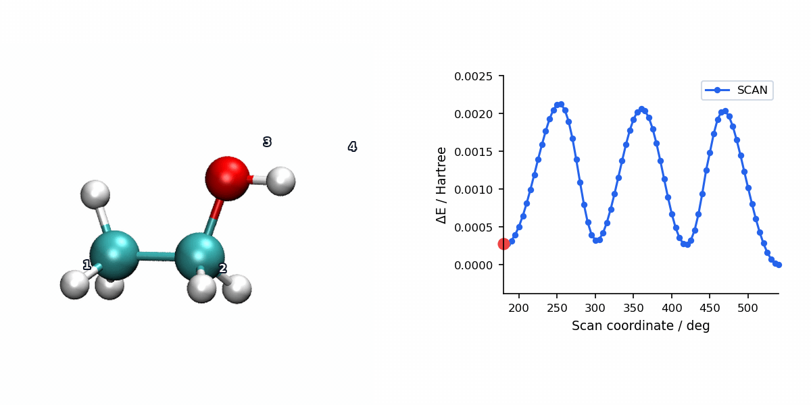

PES Scan with L-BFGS Optimization
Overview
The L-BFGS (Limited-memory Broyden–Fletcher–Goldfarb–Shanno) method is the default geometry optimizer used in relaxed PES scans. At each scan point, after the scanned internal coordinates are constrained to their target values, L-BFGS optimizes all remaining degrees of freedom to find the nearest local minimum on the constrained surface.
L-BFGS builds a low-rank approximation to the inverse Hessian from a short history of past displacements and gradient changes, enabling efficient convergence without storing or inverting the full Hessian matrix. This makes it well suited for systems of any size, from small molecules to large biomolecular fragments.
Parameters
Relaxed scans use the same L-BFGS optimizer as #opt(method=lbfgs). The requested internal coordinates are fixed at each scan point while the remaining geometry is relaxed.
| Parameter | Type | Default | Description |
|---|---|---|---|
memory |
int | 5 |
Number of previous steps retained for the approximate inverse Hessian. |
curvature |
float | 70.0 |
Initial diagonal Hessian estimate before optimization history is accumulated. |
max_step |
float | 0.2 |
Maximum allowed atomic displacement per step (Angstroms). |
max_iter |
int | 256 |
Maximum number of L-BFGS iterations per scan point. |
verbose |
int | 0 in scans |
Output verbosity level. Scan sets this internally to suppress per-point optimizer detail and keep the scan log readable. |
Because relaxed scans use the same L-BFGS optimizer as geometry optimization, L-BFGS parameter names match the optimization L-BFGS page. Use level on #scan for the shared convergence preset; scan output keeps per-point optimizer verbosity quiet by design.
Input Example
Checked-in MAPLE example: example/scan/lbfgs/ethanol_torsion.inp. This is the relaxed ethanol torsion scan shown in the visualization below:
#model=aimnet2nse
#scan(method=lbfgs,mode=relaxed)
#device=gpu0
C 0.00000000 0.00000000 0.00000000
C 1.52000000 0.00000000 0.00000000
O 2.07000000 1.21000000 0.00000000
H 2.94000000 1.20000000 0.00000000
H -0.54000000 0.94000000 0.00000000
H -0.54000000 -0.47000000 0.81400000
H -0.54000000 -0.47000000 -0.81400000
H 1.92000000 -0.52000000 0.89000000
H 1.92000000 -0.52000000 -0.89000000
S 1 2 3 4 5.0 72The final S line is a dihedral scan: four atom indices followed by a 5.0 degree step and 72 increments, producing 73 scan points including the initial geometry.
Scan Visualization
The animation below pairs the generated scan geometries with the energy profile for a relaxed ethanol torsion scan using L-BFGS.

When to Use
L-BFGS is the recommended default method for relaxed PES scans. Use it when:
- You need a general-purpose relaxed scan with reliable convergence.
- The system is well-behaved and does not exhibit strong anharmonicity or near-degenerate states at the scan points.
- You want efficient optimization without explicit Hessian computation at each scan point.
If L-BFGS has difficulty converging at certain scan points (for example, near transition states or in flat regions of the PES), consider reducing the scan step size, tightening the convergence level, or switching the relaxed scan to method=rfo.